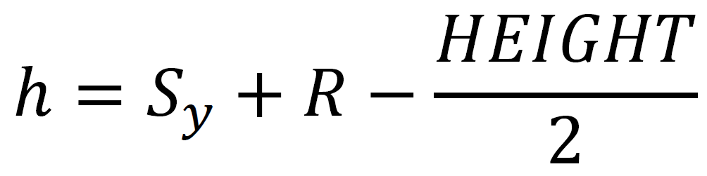
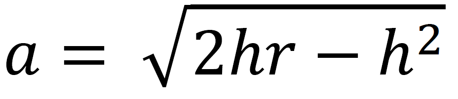
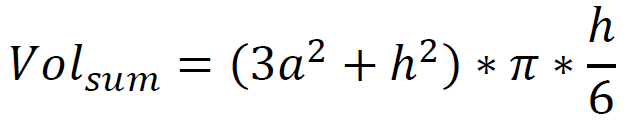
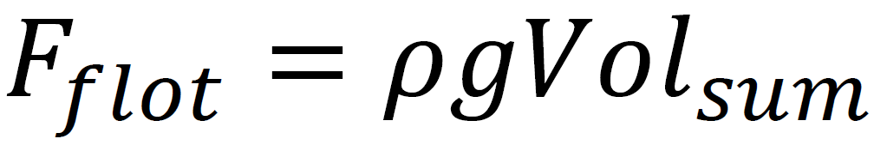

Ejercicio 1 y 2: Particula flotante y Splash
Enlace para ver el codigoEn este ejercicio he programado una partícula flotante con Splash
Para crear el elemento flotante he utilizado los siguientes parámetros:
- SIM_STEP: 0.05
- G: (0, 9.81) m/s^2
- R_flotante: 100 px, aunque la partícula que se genera al final es un cuadrado, por lo que R será el tamaño del cuadrado
- Densidad (𝝆): 0.00001 kg/m^3
- M: 1kg
- Posición inicial: (WIDTH/2-R_flotante/2,200)
Y para crear el efecto de splash he utilizado estos:
- NT (Particulas generadas por segundo): 200
- L (Tiempo de vida de cada particula): 10s
- Radio de cada particula: 5 px
- Masa de cada particula: 1 kg
- Rango Posiciones aleatorias en x: (-R/2…R/2)
- Rango Velocidades aleatorias en x: (-90…90)
- Rango Velocidades aleatorias en y: (-60…-20)
- Fricción con el aire: -0.00001
He creado una clase para el elemento flotante que guarda su radio, densidad, masa, posición, velocidad, aceleración y fuerza. En su función update() se realizan los siguientes pasos:
-
Obtención de la altura del punto más bajo del flotante al líquido.
Donde HEIGHT/2 es la posición en la que se encuentra el líquido, en este caso en el centro de la ventana.
-
Comprobar si la altura es mayor que 0, si es así significa que la partícula ha colisionado con el agua.
-
Calcular el segmento que se ha sumergido.
 -
Calcular el volumen sumergido
 -
Obtener la fuerza de flotación:
Donde 𝜌 es la densidad del flotante
Finalmente, se suma esta fuerza con la de la gravedad y se calcula la aceleración, velocidad y posición con el integrador preferido. En mi caso he usado Euler Simpléctico. En el caso de que la particula no haya tocado el agua, la fuerza final será solo la ejercida por la gravedad.
En cuanto al splash, se puede activar pulsando la telca “S”. Para crearlo he reutilizado las clases Particle y ParticleSystem que hemos utilizado en las prácticas. En la funcion updateSimulation() del programa principal, se llama primero al update() del elemento flotante, explicado anteriormente. Luego se comprueba si su altura es mayor que 0 y que la booleana explosión este en true para que nada mas toque el agua se generen las particulas. Se crearán NT particulas y a cada una se le asignará una posición en X y una velocidad aleatoria. Cada una de estas se añadirá al particleSystem, que es el splash y se encargará de gestionarlas para que desaparezcan si su TTL es 0 y de llamar a la funcion update() de cada una.
En cuanto a la función draw() el orden de dibujado ha sido el siguiente:
- Cielo
- Particula Flotante
- Splash
- Agua
Para el agua, he añadido transparencia para que se pueda ver la particula flotante sumergida